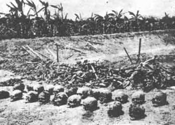

|
|
|
|
|
|
|
|
|
|
|
"Martyr Intellectual day" |
||||
|
Homage to my martyr colleagues.
 Fourteenth December is known to us as "Shahid Budhijibi Dibas" (Martyr Intellectual Day). I am not sure if the word "Martyr" is the exact equivalent to "Shahid". I think the word Shahid carries much more deeper feeling and intensive sense that touches heart. We shall, who had even remote touch with war of liberation for our motherland, Bangladesh or with those days of 69 - 71, the days of movement for autonomy, non-cooperation movement of 71 that ultimately led us to war with the occupying Pakistani army never forget these martyrs. If we do we would betray them and their cause. 16th December is our victory day, the day on which the occupation force led by Niazi surrendered to the Joint commander of the Bangladesh-India joint force, Lt. General Aurora, commander of the Eastern command of Indian force, popularly known as "Mitra Bahini". Bangladesh Government and the Liberation force was represented by now Air Vice Marshal AK Khondkar, the then and freedom fighter Kader Siddiqui, Beeruttam, commander of the liberation force of Tangail-Jamalpur zone represented the freedom fighters. But why we should remember 14th December? I don't know if our new generation in general knows the significance of the day or like the wards "Muktiyudha", "Muktiyudher Chetana", "Muktiyodha", "Rajakar", "Al Badar", "Al Shams"-- is now a "forgotten day" bearing no meaning to them. Between 12th -14th December of a group of intellectuals belonging to different professions were picked up by a locally organized auxiliary force collaborating with Pakistani force known as Al Badar and Al Shams. Most of them did not return. Later on when ultimately victory came we learnt with horrible shock and dismay that these great sons of Bangladesh had to be sacrificed at the alter of our dear independence. How could we remember their sacrifice, their contribution for independence and liberation of our motherland ? The then Tazuddin Government declared this day as Martyr Intellectual Day so that we can remember them and their contribution perpetually. But the day lost its original significance since the turn over of history in 1975. Subsequent governments never observe the day in a true spirit. The list of intellectuals killed during the entire nine months of our liberation war is quite long and wide spread. You can well imagine how long will be the list of general, unknown, unsung heroes who became Shahid. We say we had earned our independence at the cost of lives 30 lakh of Shahids and at the sacrifice of greatest wealth of thousands of our womenfolk. I take this opportunity to remember these unknown heroes and heroines and pay solemnly my respect to their feet. I am alive to day because they gave their life and honour to protect my life and many likes me. How could I forget them? But how many of us tried to repay this debt of ours by trying to discover their identity. Alas, only a few. Are we ungrateful, individually or collectively ? Today I
shall remember the by my tributes to my colleagues who became Shahids for our
independence. Most of them were personally known to, many were intimately. How
should I begin ? Alphabetically ? May be. Anudwaipayan
Bhattacharya,
Lecturer in Applied Physics (DU) Anudwaipayan hailing from Sylhet was a student of mine in the physics department. All through he had an excellent academic. After obtaining an M.Sc. degree with first class he joined the newly created Department of Applied Physics in 1968. Simultaneously he was appointed assistant house tutor in Jagannath Hall. Socially conscious Anudwaipayan, although not an activist was a silent supporter of all progressive movement. He was selected for commonwealth scholarship and was scheduled to leave the country on 26th March, 1971. But alas, the dreadful army operation "Operation Search light" in Jagannath hall on the black night of 25th March took his life. His body was never discovered. His body was buried in a mass grave dug by the Pakistani army on 26th March by bulldozer. I personally saw this grave on the following day when I went to see the devastating scene f battlefield in and around JN hall. But today I shall not describe it. Readers please pardon me. Let us remember him at least today for a moment. Please visit the mass grave within the JN hall premise if you have not done before. Anowar
Pasha, Senior Lecturer in Bangla (DU). A very
good friend of mine, born in 1928 in the district of Murshidabad migrated to
the then East Pakistan after obtaining M. A. degree in Bangla from Calcutta
University. He began his teaching career as a lecturer in Pabna Edward College
in 1958. He then came to Bangla Deparment of DU as a lecturer in Bangla in
1966. Subsequently he became Senior lecturer in 1970. A staunch supporter of
Bengalism with all its associated attributes i.e. a believer of pluralism and
secularism. He easily earned the animism of the fundamentalists against whom
we were all then fighting. He was our comrade in arms. It is no wonder that he
was picked up on the morning of 14th December by Al Badrs from his
university residence. He never returned nor we could discover his dead body. He completed his novel "Rifle Roti Awarat" depicting those dreadful captive days of nine months. It's a pen picture of his personal experience. The characters are true and properly represented. His other noteworthy works are Neer Sandhani, Nirupay Harini, Rabindra Choto Galpa Samisjkha. A great personal loss to me. Abdul Muktadir, Lecturer in Geology (DU) He was my neighbor living in DU campus known as Fuller Road locality. All most every day we used to see each other. He always greeted me with a cheerful smile. A good looking medium stature was a typical Bangali in every respect. A silent and progressive supporter of non-cooperation movement. On the dreadful morning of 26th March he was shot dead at his residence by a group of army jowans of Pakistan when army raided our area in the early morning. From my 3rd floor flat through a window hole I saw his blood-letting dead body being dragged out and lifted on army truck. I shall never forget this scene nor shall I ever pardon those Pakistani beasts in human form. Dr. Abdul Khayer, Senior Lecture in History, DU Another very good friend and well wisher of mine. Born in 1929, he joined History department in 1955 as a lecturer. He did his Ph. D. on Foreign Policy USA as regards to Indian subcontinent from !937 - 1947. An enthusiastic supporter of independence movement of Bangladesh. He was an activist inside the university organizing movement of autonomy of university and non-cooperation movement. He was one of our gallant fighters. For this he had to pay very dearly. When I left Dacca in early April, 1971 after surviving the army crack down, I saw him in his hiding place and discussed with him my plan of action and requested him to accompany me or do the same later on. Alas he could not make it. He was picked up by the army some time in August together with other few of the university teachers. But luckily he was released after a month. He stayed back in his university flat from where he was picked up by the Al Badrs on 10th December never to return. He was brutally killed.
Ataur Rahman Khan Khadim, Lecturer in Physic, DU Khan Khadim was my colleague in Physics Department. A dedicated teacher having extraordinary brilliant academic caliber. He studied theoretical physics fro Gotingent University in Germany and joined his alma mater in 1965. He was killed brutally by the Pakistani soldiers in an early dawn operation of 26th March in Dhaka Hall. He was shot dead in his room. A silent worker gave his life silently. No body remembers him even in his department. We named one of the third year laboratories where he worked after his name. But when the laboratory was shifted to a new modern building his name was wiped out. This is the way we want to preserve our history of liberation movement. A sad aspect of our character indeed.
Gyasuddin Ahmed, Senior Lecturer in History, DU Our Gyas Bhai, as he was known to us. A gallant fighter for our freedom movement and of our autonomy for university movement. A popular teacher loved equally loved by students and his colleagues. He joined DU as a lecturer in history in 1958. He got B. Sc (Hons) degree in Economics from London University. During those dreadful days of occupation period he was a house tutor of Mahasin Hall. In middle of August he was taken by the army along with his another colleague for interrogation. They were however released within a fortnight. But Al Bdars did not forget his pro-liberation activities from within occupation zone. He had to pay the price for it with his life for his decision to stay back and work from within. A few years during AL regime of Hasina his sister filed a case of murder of Gyas Bhai against some members of the Al Badars.. But the court proceeded in such a slow manner that nothing came out ultimately. The culprits are still around us; nay they are now in the seat of power. And we are in retreat. Have we fought for this Bangladesh? Who has the answer ?
Dr. G. C. Dev, Professor of Philosophy, DU Internationally known Philosopher Professor Dev was my teacher and Principal while I was a student of SN College studying Inter Science at Dinajpur. Principal Dev had to leave the college for local politics, which of course became a boon for him as DU offered him to join in Philosophy department in 1953. Dr. Dev as a Pundit of Indian Philosophy and eastern religion including Islam earned reputation for his department and the university through his writings. A well-known philosopher in Indian thoughts he devoted his life for education and research. But even then the Pakistani army during the dreadful night of 25th March raided his residence and killed him and his "son in law", husband of his Moslem adopted daughter. His body was buried in the mass grave of JN hall.
Dr. Jyotirmoy Guhathakurata, Reader in English, DU (Provost of JN Hall) Dr. Guhathakuratha was my teacher in the sense he was my house tutor when I was a student of Dhaka Hall from 1953 - 57. A perfectly cultured person he was an out an out humanist. Whatever humanistic value I acquired, if any I leaned from him. He showed me how to love men irrespective of their difference in religion, caste and race. He was a follower of great personality Manavendra Ray. He was great lover of beauty, environment and whatever we understand by the word "fineness". He was a perfectionist. He joined English department in 1949 as a lecturer. He obtained the degree of Ph. D from London University in 1967. He became reader in 1968 and provost in 1970. On the dreadful night of 25th March army raided his residence near the present Shahid Minar. He was shot at the throat. On the following Morning when army moved away from the locality he was moved to Dhaka Medical College Hospital. I went to see him in DMCH on 28th, and saw his pathetic condition. Unable to talk I found tears running down from his eyes over the cheek. I hold one hand of my dear sir. Nothing we can do or the doctors. The hospital was almost cordoned with army persons. I cannot describe the tense and fearful atmosphere and environment prevailing in and outside DMCH at that time. He breathed his last probably 29th or 30th March- I exactly do not know even today. When I visited hospital probably on 2nd or 3rd April, I found his bed empty. I did not dare to ask any one where had he gone. I cried in silence. Where gone his dead body no body knew, even after the country was liberated. His beloved wife, our dear Basanti di had to move it from one place to another to protect her and her little daughter "Dola", a lovable little child. We must remember those brave friends of her who took so much pain and care to save her in those critical days. In him I lost a true philosopher and guide. |
||||